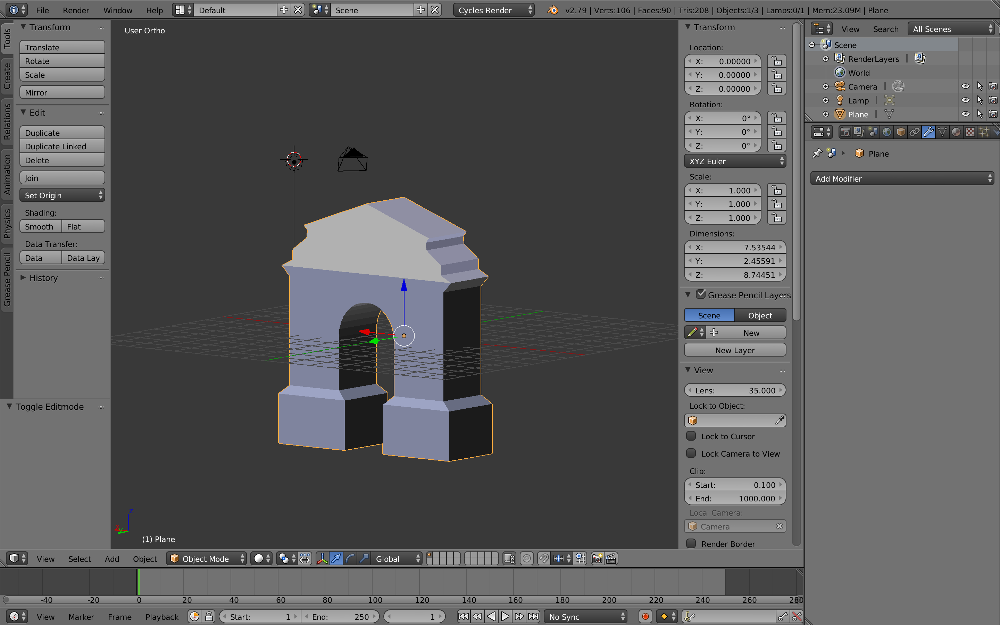

Видео
История
Московская триумфальная арка стала мостом, соединившим разные страницы истории Иркутска. И в 19 веке, и сейчас она воспринимается как символ Иркутска, который встречал всех путешественников, государственных деятелей, писателей, посетивших и посещающих столицу Восточной Сибири.
Традиция строить триумфальные ворота (арки) зародилась еще в древности и была связана с необходимостью увековечить какое-то грандиозное событие. В России первое подобное сооружение возведено в Москве в связи с успехом Азовского похода Петра Великого в 1696 году.
Особенностью провинциальных городов, к которым относился и Иркутск, являлось создание триумфальных арок в честь приезда высокопоставленных лиц, в первую очередь — представителей правящей фамилии. Ко всему, именно в Иркутске впервые в Восточной Сибири стали сооружать подобные строения, которых, начиная с 1789 года (первая иркутская арка по случаю приезда генерал-губернатора И.А. Пиля) и до настоящего времени было шесть.
Одна из самых известных достопримечательностей города — Московские триумфальные ворота. Несколько предложенных ниже фактов позволят представить их историю.
Причины создания
Официальная версия возведения триумфальных ворот изложена в одной из двух закладных железных досок, заложенных в основание пилонов арки. В ней говорится, что «сии градские ворота воздвигнуты… по случаю всерадостнейшего дня восшествия на высочайший престол Государя Императора Александра I, торжественно празднуемого 12 марта 1811 года…». К моменту открытия они должны были являть торжество национального духа в период Отечественной войны 1812 года. Но городской фольклор предлагал и иные версии. Другая история объясняла факт появления ворот долгожданным окончанием моровой язвы, уничтожающей в губернии крупный скот.
Закладка и открытие
По одним данным, закладка ворот произошла 9 июля 1811, по другим — 12 марта. Но однозначно 15 сентября 1813 года состоялся праздник по случаю открытия арки, когда сами Московские ворота были украшены иллюминацией, а на верхнем этаже, в так называемой чаепитной комнате, прошел прием в честь гражданского губернатора Николая Трескина и епископа Вениамина I.
Название
Современная улица Декабрьских событий называлась ранее Ланинской, а еще раньше — Московской. Она являлась главной въездной магистралью нашего города. И на пересечении улиц Московско-Ланинской и Нижней набережной Ангары при въезде (выезде) из Иркутска на Московский тракт, в сторону Европейской части России, и встали ворота, вполне естественно названные Московскими.
Создатели ворот
Ворота создавались в период правления сибирского генерал-губернатора И.Б. Пестеля и Иркутского губернатора Н.И. Трескина. На второй закладной доске сообщались фамилии деятелей городского самоуправления, среди которых: бургомистры Алексей Мясников, Иван Баженов; ратманы Гаврила Белоголовый, Александр Сибиряков, Александр Лычагов и другие лица. Непосредственно ворота возводились по проекту губернского архитектора Я.А. Кругликова.
Внешний вид ворот
Московские ворота удачно вписывались в комплекс береговой застройки города. Их было видно при подъезде к Иркутску издалека, так как представляли они собой четырёхъярусное здание высотой 19 метров при ширине 7,1 метра и длине почти 16,5 метров. Построены ворота были на основе русских традиций — из кирпича на растворе из куриных яиц. После — оштукатурены, окрашены в желто-оранжевый с белым (отделка) цвет. По фасаду располагалась символическая лепнина, а внутри — помещения различного значения. Однозначно архитектурное направление арки определить сложно, так как в ней соединились ампир, ренессанс и романский стиль.
Предназночение строения
На каждом ярусе ворот и в ее колоннах располагались в разное время комнаты различного предназначения: приезжающих в город встречали специальные служители заставы, помещающиеся на первом уровне; этажом выше имелось помещение для караула; далее — наблюдательный пункт; самый верх — чаепитная комната (небольшой зал для церемоний встреч и проводов). Таким образом, арка выполняла несколько задач: выводила на тракт, ведущий в Европейскую часть страны, исполняла функции заставы, являлась станцией спасения на водах, использовалась для торжественных приемов. С 1880 года верхние этажи стали местом хранения документов губернского архива.
Разборка ворот
Содержание ворот требовало серьезных финансовых вложений, так как они постепенно ветшали из-за слабости фундамента, которая усугубилась несколькими подземными толчками 1912 года, накренившими сооружение в сторону Ангары. Несмотря на возмущения общественности, денег городские власти найти не могли, а приход большевиков окончательно разрешил ситуацию. В 1922 году было принято решение о сносе ворот, которое завершилось в 1925 году (по иным данным — в 1928).
Возрождение арки
В августе 2009 года, в честь 350-летнего юбилея города, в очередной раз встал вопрос о восстановлении памятника. Изначально было понятно, что сделать это на историческом месте не удастся, и современный аналог возводился в 20 метрах от своего прототипа. Руководил проектом восстановления и профинансировал его строительство Е.Г. Девочкин, передавший Московские ворота в дар Музею истории Иркутска. 14 сентября 2011 года ворота были торжественно открыты, причем на их создание ушло рекордно короткое время — 3 месяца. Нынешнее сооружение имеет практически исторические параметры, но возведено с использованием современных технологий. Его адрес: ул. Нижняя Набережная, 8/1.
3D модель
Нами была создана 3d модель памятника архитектуры "Московские ворота".Ссылка для скачивания тут.К сожалению, нам не удалось реализовать данную модель в AR-слое,так как ROAR не отобразил модель! Представляем вам фотографию модели "Моковские ворота":
